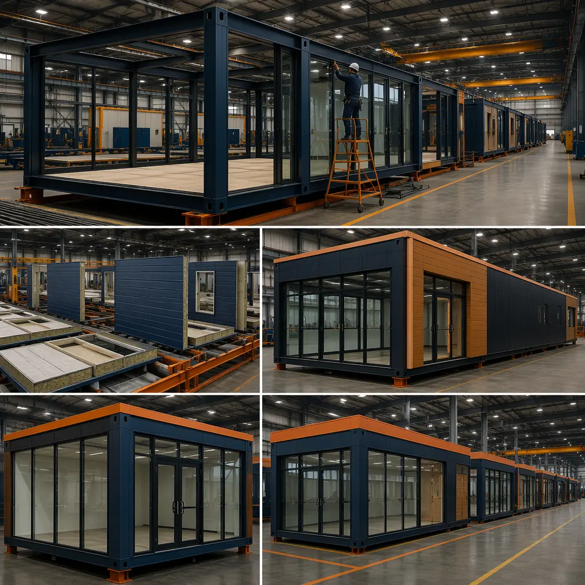
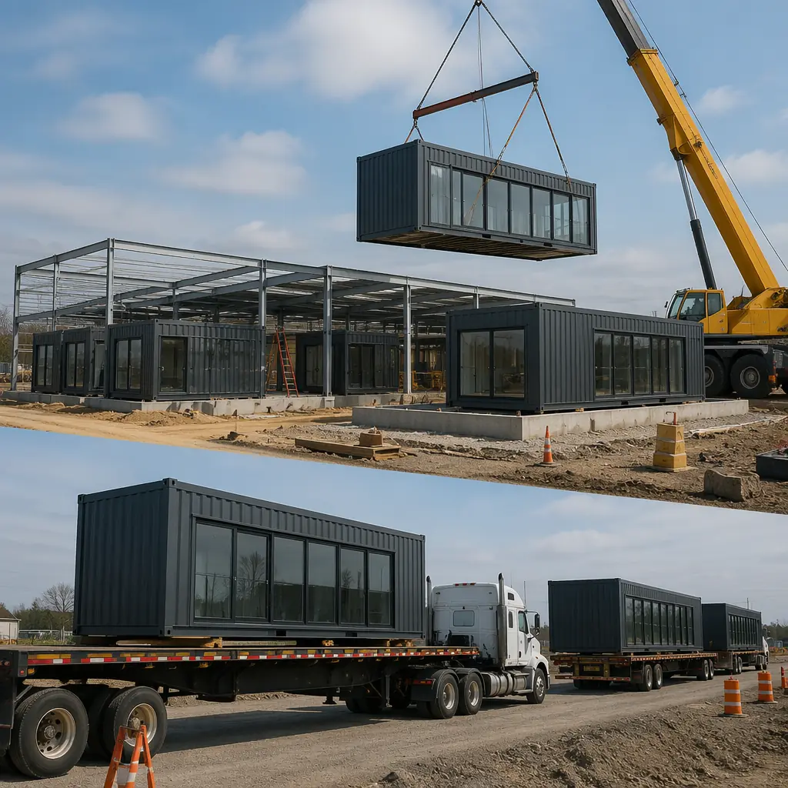
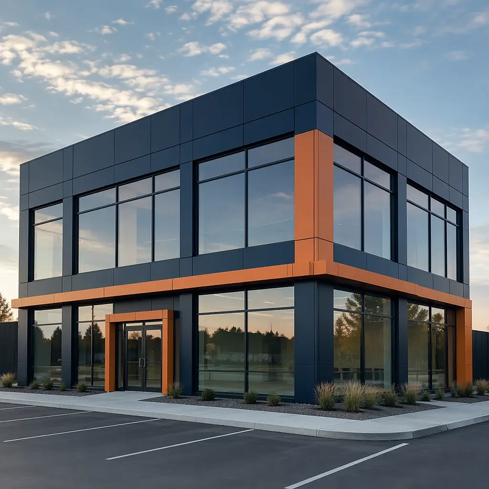
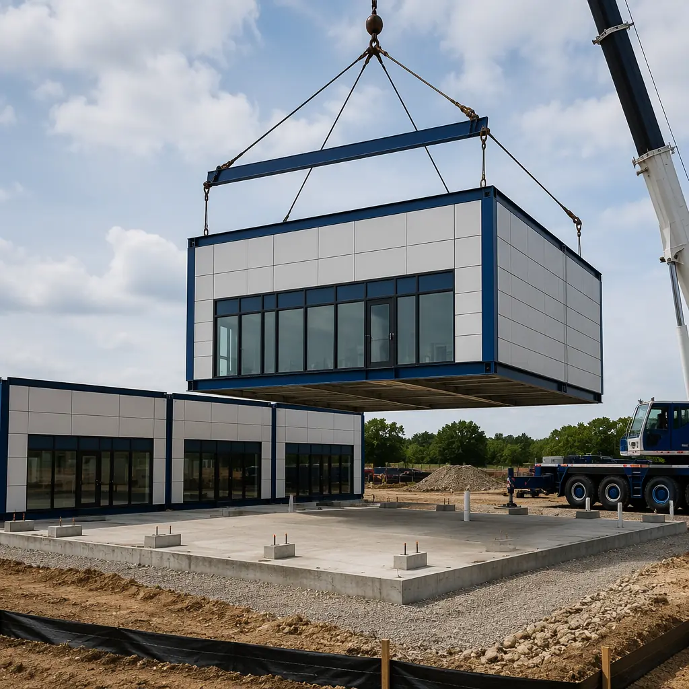

The US retail construction market builds approximately 150 million square feet of new retail space annually — from single-tenant stores and restaurant chains to bank branches and big-box anchors. Every week a store sits incomplete during construction represents lost revenue: a mid-market retailer doing $2 million in annual sales loses roughly $38,000 for every week of delayed opening. Traditional retail construction takes 18-24 weeks from ground-breaking to grand opening. Modular prefabricated retail construction reduces this to 10-14 weeks — a 40% time savings that compounds across multi-store rollouts. For a retailer opening 50 locations per year, that's 500 fewer weeks of idle construction time and $19 million in recovered revenue potential.

Why Traditional Retail Construction Bottlenecks Multi-Store Growth
Retail construction faces a unique set of constraints that modular manufacturing directly addresses:
- Site variability kills standardization: A retailer's prototype store design — engineered once at headquarters — hits different soil conditions, local building codes, and weather patterns across 50 locations. Each site becomes a one-off engineering exercise, erasing the economies of repetition that the prototype was supposed to deliver. Modular construction inverts this: the factory builds the same module to the same tolerances regardless of site conditions. Site work adapts to local conditions; the building itself does not.
- Trade sequencing creates idle time: Traditional retail build follows a rigid sequence — foundation → steel → enclosure → MEP → interior finishes → fixtures. Each trade waits for the previous one to finish. A 3-day concrete curing delay in week 4 cascades into a 2-week finish delay by week 16 as subcontractors get rescheduled. Modular construction runs site work and factory work in parallel: foundation and utilities are completed on site while modules are being assembled in the factory, cutting the critical path by 40-60%.
- Seasonal construction windows: In northern markets, site-built retail construction is effectively limited to April-October. A retailer that signs a lease in November waits 5 months before a shovel touches the ground — and then waits another 5 months for the store to open. Modular construction's factory-controlled environment decouples production from weather: modules are built year-round indoors and stockpiled for spring site assembly, compressing the on-site window to 4-6 weeks regardless of season.
These aren't minor inefficiencies. JLL's retail construction benchmarking data shows that schedule overruns affect 43% of retail projects, with an average delay of 8.2 weeks. For chains executing multi-site rollouts, this variability makes capital planning nearly impossible. As we documented in our comparison of modular versus traditional construction, factory-controlled production eliminates the root causes of schedule variability across every building type, including commercial retail.
How Modular Retail Construction Works
A modular retail store isn't a temporary kiosk — it's a permanent, code-compliant commercial building manufactured in a factory and assembled on site. MODURA's typical retail module measures 14 feet wide by 60 feet long (840 sq ft per module), with a structural steel frame, built-in MEP rough-in, and the building envelope complete. A standard 2,500 sq ft single-tenant retail store requires 3 modules. A 5,000 sq ft restaurant or mid-box format uses 6 modules. The modules arrive on flatbed trailers, are craned onto a prepared foundation, and are connected structurally and mechanically in 1-2 weeks of on-site work.

Key Components of a Modular Retail Store
| Component | Traditional Site-Built | Modular Factory-Built |
|---|---|---|
| Structural steel & enclosure | 8-10 weeks on site | 6-8 weeks in factory, concurrent with site work |
| Storefront glazing & doors | 3-4 weeks, weather-dependent | Pre-installed in factory to ±2mm tolerance |
| HVAC rough-in | 2-3 weeks after enclosure | Integrated during module assembly |
| Electrical & low-voltage | 3-4 weeks on site | Pre-routed, terminated at module joints |
| Interior drywall & paint | 4-5 weeks, multi-trade sequencing | Completed in factory, joints finished on site |
| Grand opening readiness | Week 18-24 | Week 10-14 |
The Multi-Site Rollout Advantage
For retail chains, the real modular advantage isn't per-store savings — it's program-level acceleration. When a retailer opens 20 locations per year using traditional construction, those 20 projects run in parallel with 20 separate general contractors, 20 permitting processes, and zero shared learning between sites. Each project team reinvents the wheel.
Modular retail construction consolidates production onto a single assembly line. Consider a quick-service restaurant chain scaling from 50 to 150 locations:
- Traditional approach: 100 new stores, each taking 22 weeks site-built, requiring 100 GC teams mobilizing across 30 states. Total program duration: 36-48 months. Average per-store cost variance: ±18% due to regional labor and material price differences.
- Modular approach: 100 stores produced from 2-3 factory lines. Modules for 4-6 stores built simultaneously in the factory while site crews prepare 4-6 foundations concurrently. Total program duration: 24-30 months. Per-store cost variance: ±5% because 70% of the building's cost is factory-fixed.
The learning curve is the hidden multiplier. The 10th modular restaurant off the production line requires approximately 12% fewer factory labor hours than the first, as assembly processes are refined. By store 50, factory productivity has improved 20-25%. On-site assembly teams follow the same trajectory — the crew that assembles their 20th store completes it 30% faster than their first. This compounding efficiency is what makes modular construction the dominant choice for multi-property hotel programs and what increasingly drives retail chains toward factory-built solutions. Our detailed ROI analysis quantifies these program-level savings across multiple building types.

Retail Formats That Benefit Most from Modular
Not every retail format is equally suited to modular construction. The strongest ROI cases share common characteristics: repeatable store prototypes, time-sensitive openings, and multi-site programs.
Single-Tenant Retail (1,500-5,000 sq ft)
This is modular retail's sweet spot. Cell phone stores, optometry clinics, insurance offices, and specialty retail boutiques typically occupy 1,500-3,000 sq ft — 2 to 4 modules. The standard 14'×60' module width provides 20-foot clear spans ideal for open retail floors, while the module length accommodates back-of-house areas (stock room, office, restroom) in the rear 20 feet. MODURA's retail modules are pre-engineered for 35-foot-deep store formats, the most common retail bay depth in US shopping centers.
Quick-Service and Fast-Casual Restaurants
Restaurant construction adds complexity that modular handles well: commercial kitchen rough-in (exhaust hoods, grease traps, gas lines, ANSI/NSF surfaces), dining area HVAC with higher air change rates, and drive-through window integration. In a factory setting, kitchen equipment rough-in is installed to millimeter precision — exhaust hood alignment with roof curb, floor sink placement relative to equipment layout — eliminating the on-site coordination errors that cause 60% of restaurant construction punch-list items. A typical 2,800 sq ft QSR with drive-through uses 4 modules and achieves health department approval 3-4 weeks faster than site-built equivalents because mechanical and plumbing systems are pre-inspected at the factory.
Bank Branches and Financial Services
Bank branches have exacting security requirements: vault construction, ATM anchoring, ballistic-rated teller lines, and dual-network data pathways. These are precisely the kind of specification-heavy builds where factory quality control delivers disproportionate value. A modular bank branch's vault room is built as a reinforced module sub-assembly with continuous concrete fill — tested and documented before leaving the factory — eliminating the most error-prone element of bank construction. For a regional bank opening 15 branches per year, modular construction reduces per-branch build time from 20 weeks to 13 weeks while improving security compliance documentation that satisfies FDIC examination requirements.

Retail-Specific Design Flexibility
A common misconception is that modular construction produces generic, boxy buildings unsuitable for brand-conscious retailers. This hasn't been true for a decade. Modern modular retail construction supports:
- Custom storefront design: Curtain wall systems, aluminum composite panels, brick veneer, fiber cement siding, and EIFS finishes are all compatible with modular structural frames. The module's steel frame accepts any cladding system a site-built steel frame would — the attachment method is identical. A retailer's prototype storefront design translates to modular with zero architectural compromise.
- Ceiling heights up to 18 feet: Standard retail modules provide 12-foot interior clear height. For retailers requiring taller volumes — furniture showrooms, specialty grocery, fitness concepts — modules can be engineered for 16-18 foot clear heights with deeper steel beams and revised transport logistics.
- Pylon and monument signage: Signage foundations are cast on site concurrent with module fabrication. Sign structure attachment points are pre-engineered into the module's steel frame, with structural calculations included in the factory submittal package. No post-hoc engineering required.
- Drive-through integration: For restaurant and pharmacy formats, the drive-through lane, canopy, and window are designed as part of the modular layout from day one. The drive-through window module is a dedicated unit with pre-framed service window opening, menu board electrical rough-in, and speaker post conduit — all factory-installed.
This flexibility mirrors the approach MODURA brings to commercial office buildings and mixed-use developments, where architectural variety is a market requirement, not an optional feature. Factory production standardizes the parts that should be standardized — structure, envelope, MEP — while leaving the architect free to design the parts that differentiate the brand.

Cost Comparison: Modular vs. Traditional Retail Construction
Direct per-square-foot cost comparison between modular and traditional retail construction misses the point. A modular retail store typically costs 0-5% more per square foot in hard construction costs — but delivers the following offsetting savings:
| Cost Category | Traditional | Modular | Delta |
|---|---|---|---|
| Hard construction ($/sq ft) | $180-220 | $185-225 | +0-5% |
| Construction loan interest (shorter duration) | 12-16 weeks | 7-9 weeks | −35-45% |
| General conditions / site overhead | 18-24 weeks | 10-14 weeks | −40% |
| Lost revenue during construction | 18-24 weeks | 10-14 weeks | −8 weeks |
| Change orders (% of contract) | 8-12% | 2-4% | −6-8 pts |
| Punch list resolution | 3-5 weeks | 1-2 weeks | −60% |
When the full project lifecycle is accounted for — construction loan carry, site overhead, early revenue capture, and reduced change order exposure — modular retail construction achieves total project cost parity or better in 80% of applications. For multi-site programs, the net cost advantage typically reaches 5-8% below traditional construction by the 10th store as factory learning curve efficiencies compound. This is consistent with the lifecycle economics we've analyzed across 500+ modular projects in 18 countries, spanning commercial, residential, and institutional building types.
Is Modular Right for Your Retail Project?
Modular retail construction delivers the strongest advantage when your project exhibits one or more of these characteristics:
- Multi-site program (5+ locations): Where factory learning curve and standardized production produce compounding savings
- Repeatable prototype design: Where architectural variation between stores is minimal (signage, finishes, roof line) and core building geometry is consistent
- Time-sensitive opening: Holiday season, competitor preemption, or lease commencement penalties that make every week of early opening valuable
- Constrained sites: Urban infill, pad sites with limited laydown, or locations where 20 weeks of construction activity disrupts neighboring tenants
- Northern climate locations: Where traditional construction loses 4-5 months per year to weather, but factory production continues uninterrupted
For one-off flagship stores where architectural uniqueness is the primary value driver, traditional construction may offer more design iteration flexibility during the build. But for the 80% of retail construction that follows a prototype — the strip-center tenant, the QSR chain location, the bank branch, the wireless carrier store — modular construction's combination of speed, quality, and cost predictability makes it the rational default. At a time when retail square footage per capita in the US has declined for three consecutive years, the retailers that win are the ones that open faster, spend less, and operate from day one with fewer construction defects. Modular retail construction delivers all three.
MODURA brings 500+ completed modular projects across 18 countries and 4 ISO 9001/14001 certified factories to every retail engagement. Whether you're planning a single prototype store or a 50-location regional rollout, contact our commercial team for a free feasibility assessment including timeline analysis, cost comparison, and a build program tailored to your retail format and site pipeline.